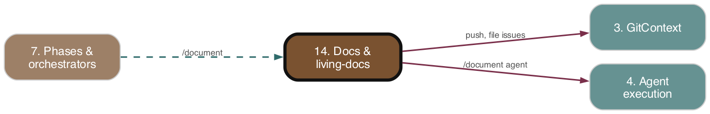

Docs & living-docs
As-is reference. Ground truth: source code.

Purpose
Generates and maintains current-state module documentation under app_docs/. The /document skill semantically routes a code change to the module doc that already owns the touched area, rewrites that doc in place (no changelog history), and converges .adw/conditional_docs.md toward one entry per module. Deterministic guards run as a post-write self-check to flag doc bloat and ownership regrowth, opening GitHub refactor issues on bloat. The registry (conditional_docs.md) is the bounded index that /prime, /conditional_docs, and planning runs read to decide which feature docs to load.
Responsibilities
- Run the
/documentLLM skill in the Document phase to write/rewrite feature docs and update the index. - Parse / serialize
.adw/conditional_docs.mdinto structured entries (registry module — pure). - Provide ownership routing queries (glob match → owning entry/entries) and immutable registry mutations (upsert, collapse siblings).
- Compute deterministic guard flags: bloat (doc line count over threshold) and regrowth (entries with overlapping owned globs).
- Post-write self-check: measure produced docs, run guards, log flags, route each bloat flag to a GitHub refactor issue (de-duplicated against open issues).
- One-off migration acceptance gate (
checkLivingDocsIndex.ts): round-trip, doc↔entry bijection, no glob overlap, entry-count band. - Expose the parsed registry on
ProjectConfigfor downstream consumers.
Key Files
| Path | Role |
|---|---|
| --- | --- |
adws/core/conditionalDocsRegistry.ts |
Pure registry: parse/serialize, matchesGlob, findOwningEntry(ies), collapseEntries, upsertEntry. |
| --- | --- |
adws/core/docsGuards.ts |
Pure guards: globsOverlap, checkBloat, checkRegrowth, runDocsGuards, DOC_BLOAT_THRESHOLD_LINES=400. |
| --- | --- |
adws/agents/documentAgent.ts |
runDocumentAgent — wraps /document via commandAgent; extracts trailing doc path from output. |
| --- | --- |
adws/phases/documentPhase.ts |
executeDocumentPhase — runs document agent, post-write self-check, commits, pushes. |
| --- | --- |
adws/phases/docsSelfCheck.ts |
executeDocsPostWriteSelfCheck — parse registry, measure docs, run guards, file refactor issues. |
| --- | --- |
adws/checkLivingDocsIndex.ts |
Standalone migration acceptance gate (CLI, bunx tsx). |
| --- | --- |
adws/core/projectConfig.ts |
Reads .adw/conditional_docs.md, exposes conditionalDocsMd + parsed conditionalDocs. |
| --- | --- |
.claude/commands/document.md |
/document skill prompt: routing/collapse/rewrite/create-new logic and doc format. |
| --- | --- |
.claude/commands/conditional_docs.md |
/conditional_docs guide: read index, match conditions, load only matching docs. |
| --- | --- |
.claude/commands/prime.md |
/prime — reads README + conditional_docs.md guide. |
| --- | --- |
.adw/conditional_docs.md |
The live registry (221 entries; 30 carry Owns: blocks). |
| --- | --- |
app_docs/*.md, app_docs/assets/ |
Module docs (feature-{adwId}-*.md) and copied review screenshots. |
| --- | --- |
adws/core/__tests__/{conditionalDocsRegistry,docsGuards}.test.ts |
Pure-function table tests. |
Behavior & Flows
Document phase (executeDocumentPhase): posts document_running comment; resolves spec path via getPlanFilePath; initializes document-agent state; calls runDocumentAgent(adwId, logsDir, specFile, screenshotsDir, statePath, worktreePath, issue.body). On agent failure: writes failed state, posts document_failed, throws. On success: writes truncated output, runs the post-write self-check (wrapped in try/catch — non-fatal, never fails the phase), runs runCommitAgent('document-agent', …), pushes the branch, posts document_completed, emits phase cost records.
/document skill routing (semantic-first, LLM-driven): diff origin/main → touched files; read spec if given; copy *.png screenshots into app_docs/assets/. Read .adw/conditional_docs.md and semantically judge which entry's module owns the area (conditions text holistically; Owns: globs are corroborating, not required — legacy entries have none). Match → collapse sibling entries (survivor doc rewritten in place, non-survivor files deleted, entries removed, one merged entry with union of owned globs, regenerated conditions). No match → create feature-{adwId}-{name}.md + one new entry with an Owns: glob block. Never duplicate a docPath. Output: only the doc path (last line consumed by extractDocPathFromOutput).
Post-write self-check (executeDocsPostWriteSelfCheck): read {worktree}/.adw/conditional_docs.md (missing → empty registry); measure each produced doc's line count; runDocsGuards(entries, sizes, threshold); log every bloat + regrowth flag at warn; for each bloat flag call routeBloatFlag. Routing: look up the open issue via gh issue list --search "docs-bloat: <docPath>"; if found, reuse its number; else createIssue titled \`docs-bloat\`: <docPath> exceeds <N> lines — refactor <area> (body lists owned globs as the refactor area). Issue-creation failures are caught and logged (non-fatal). Returns { flags, routed }.
Guards (deterministic): checkBloat — strictly lineCount > threshold flags (at-threshold passes). checkRegrowth — only entries with non-empty ownedGlobs participate (legacy entries excluded to avoid ~190 false positives); pairwise globsOverlap via ownershipRoot (leading non-wildcard segments) + isSegmentPrefix.
Glob matcher: custom globToRegExp — ** → .*, * → [^/]*, ? → [^/], anchored full match; no external dependency.
Migration gate (checkLivingDocsIndex.ts, run manually): round-trip (parse → serialize === original), doc↔entry bijection (no dangling/orphan/duplicate), no per-file ownership overlap (findOwningEntries ≥2 owners), entry count in [25, 60]. Exits 0/1.
Data Structures
ConditionalDocEntry { docPath, ownedGlobs: string[], conditions: string[] }ConditionalDocsRegistry { preamble, entries }DocSize { docPath, lineCount };BloatFlag { docPath, lineCount, threshold };RegrowthFlag { docPathA, docPathB, globA, globB };GuardFlags { bloat, regrowth }RefactorFollowUp { docPath, ownedGlobs, issueNumber? };DocsSelfCheckResult { flags, routed };DocsSelfCheckParams,DocsSelfCheckDeps(injectable: readFile, createIssue, findExistingRefactorIssue, log)- Serialized entry format:
- <docPath>/- Owns:/- <glob>/- Conditions:/- <line>; entries blank-line separated;Owns:block omitted when empty (legacy compat); exactly one trailing newline.
Public Interface
- Registry:
parseConditionalDocs,serializeConditionalDocs,matchesGlob,findOwningEntry,findOwningEntries,collapseEntries,upsertEntry(re-exported viaadws/core/index.ts). - Guards:
checkBloat,checkRegrowth,runDocsGuards,globsOverlap,DOC_BLOAT_THRESHOLD_LINES. - Agent/phases:
runDocumentAgent(adws/agents),executeDocumentPhase,executeDocsPostWriteSelfCheck,buildDefaultDocsSelfCheckDeps(adws/phases). - CLI:
bunx tsx adws/checkLivingDocsIndex.ts.
Dependencies
- Upstream (depends on):
commandAgent/claudeAgent(Agent execution, #4);AgentStateManager,log,execWithRetry,ModelUsageMap(Config/State, #1/#2);getRepoInfo,gitContextFor,createIssue,RepoInfo(GitContext + GitHub API, #3);createPhaseCostRecords/PhaseCostStatus(#5/#13);getPlanFilePath,runCommitAgent,postIssueStageComment07. Phases & orchestrators">(#7);WorkflowConfig07. Phases & orchestrators">(#7). - Downstream (depended on by):
executeDocumentPhaseis wired into orchestrators viaadws/workflowPhases.ts07. Phases & orchestrators">(#7);projectConfigexposes the parsed registry to anyProjectConfigconsumer;/prime,/conditional_docs, planning skills read the index.
Interactions
| Other subsystem | Direction | What is exchanged |
|---|---|---|
| --- | --- | --- |
| 4 Agent execution | calls | runDocumentAgent runs /document via runCommandAgent (args [adwId, specPath, screenshotsDir], issue body for model/effort). |
| --- | --- | --- |
| 7 Phases & orchestrators | called by / calls | executeDocumentPhase invoked by orchestrators (workflowPhases.ts); calls getPlanFilePath, runCommitAgent, posts stage comments. |
| --- | --- | --- |
| 3 GitContext / GitHub | calls | gitContextFor, pushBranch, getRepoInfo; createIssue + gh issue list for refactor-issue routing. |
| --- | --- | --- |
| 1/2 Config & State | calls / read by | AgentStateManager state+logs; projectConfig parses index into ProjectConfig.conditionalDocs. |
| --- | --- | --- |
| 5/13 Cost & telemetry | produces | Phase cost records + modelUsage from the document agent. |
| --- | --- | --- |
| 15 Screenshots | reads | /document copies review screenshots into app_docs/assets/ and references them. |
| --- | --- | --- |
| 12 Framework self-upgrade | propagated by | document.md/conditional_docs.md are .adw/ hash inputs regenerated to registered target repos. |
PRD Divergences
PRD app-docs-module-living-docs.md is partially implemented.
- Implemented: registry module (parse/serialize/ownership), guards module (bloat + regrowth), rewritten /document convergence prompt, post-write self-check with bloat→refactor-issue routing, migration acceptance gate, unit tests. Matches PRD's pure-module + LLM-prompt split.
- Divergence: the PRD's bloat action is "surfaced by /document; downstream actor is /refactor or a filed refactor issue." The implementation directly files a GitHub issue from the phase self-check (routeBloatFlag → createIssue); regrowth flags are only logged, not routed/issued.
- Divergence: the one-off ADW migration is not complete in the live index — .adw/conditional_docs.md has 221 entries (only 30 with Owns: blocks), far above the PRD's target ~40 and the gate's MAX_ENTRIES=60. The convergence machinery ships, but the bulk legacy backlog remains un-migrated, so checkLivingDocsIndex.ts would currently fail the count-sanity check.
- Not separately verified here: the PRD's BDD content-assertion scenarios for /document convergence (claimed as a deliverable; not confirmed in this subsystem's source).